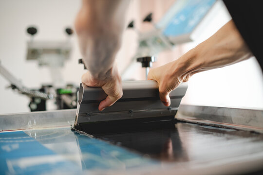
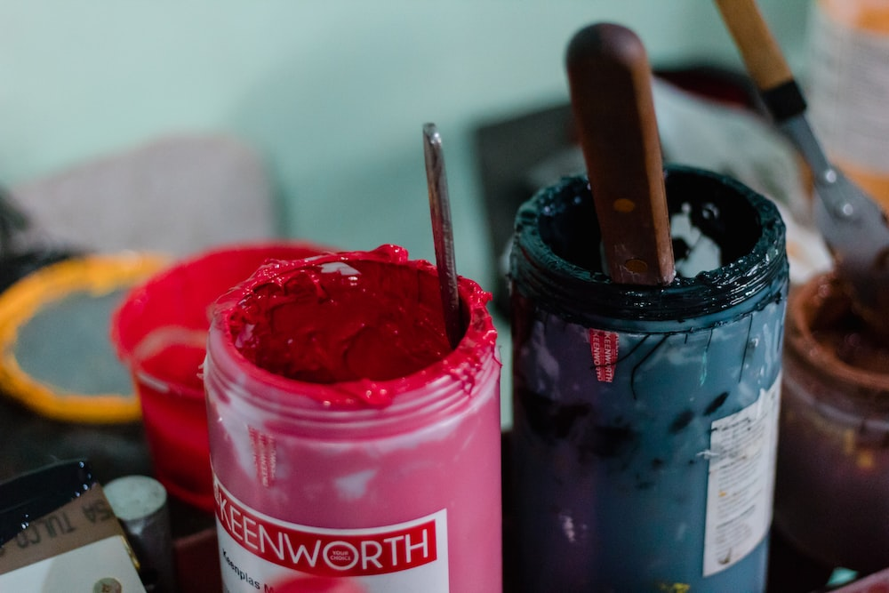
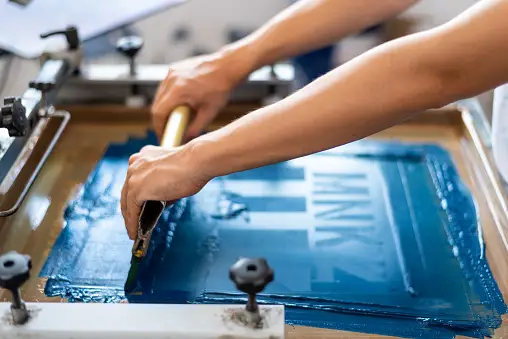
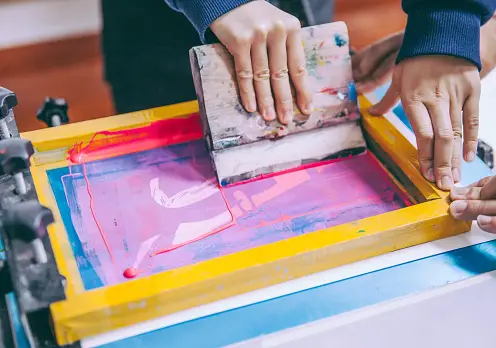

Atelier Valgreen
   
Bem-vindo(a) ao Atelier Valgreen, uma loja de estamparia personalizada que está no mercado desde 2012. Somos apaixonados por arte, criatividade e pela possibilidade de transformar ideias em produtos únicos. Nossa missão é ajudar nossos clientes a expressarem sua individualidade e estilo através de estampas exclusivas e de alta qualidade.Na Atelier Valgreen Acreditamos que cada pessoa é única e tem o direito de se destacar da multidão. Por isso, oferecemos uma ampla variedade de produtos que podem ser personalizados de acordo com as preferências de cada cliente.Nossos produtos são feitos com materiais de alta qualidade, garantindo durabilidade e resistência. Utilizamos técnicas avançadas de estamparia, como a serigrafia e a sublimação, para obter resultados nítidos e vibrantes. Além disso, temos uma ampla gama de opções de cores, fontes e imagens para que você possa criar um produto verdadeiramente único.